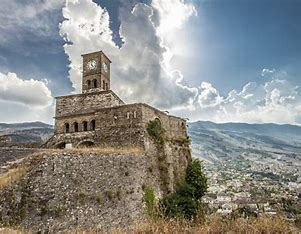
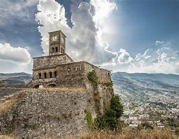

Σχετικά με το Κάστρο της Γιροκάστρας
Το Κάστρο της Γιροκάστρας είναι ένα φρούριο στην Γιροκάστρα, Αλβανία, με ιστορία που χρονολογείται από τον 12ο αιώνα. Είναι ένα από τα μεγαλύτερα κάστρα στα Βαλκάνια και προσφέρει εκπληκτική θέα στην πόλη και την κοιλάδα του Δρίνου.
Ιστορία
Το κάστρο χρησιμοποιήθηκε ως στρατιωτικό φρούριο, φυλακή και τώρα λειτουργεί ως μουσείο που παρουσιάζει όπλα και ιστορικά αντικείμενα από διάφορες εποχές. Έπαιξε σημαντικό ρόλο στην ιστορία της Αλβανίας και είναι σύμβολο της ανθεκτικότητας και της πολιτιστικής κληρονομιάς. Το κάστρο επεκτάθηκε και τροποποιήθηκε κατά τη διάρκεια των αιώνων, με συνεισφορές από διάφορες κυρίαρχες δυνάμεις, συμπεριλαμβανομένων των Οθωμανικών Αυτοκρατοριών.
Αξιοθέατα
- Εθνικό Μουσείο Όπλων - Παρουσιάζει όπλα από διαφορετικές χρονικές περιόδους.
- Φυλακή του Κάστρου - Χρησιμοποιήθηκε κατά την κομμουνιστική εποχή για πολιτικούς κρατούμενους.
- Αμερικανικό αεροπλάνο του Δεύτερου Παγκοσμίου Πολέμου - Ένα μυστηριώδες κατάλοιπο με αμφισβητούμενη προέλευση.
- Υπέροχη πανοραμική θέα της Γιροκάστρας και των γύρω βουνών.
- Ετήσιο Φεστιβάλ Παραδοσιακής Μουσικής της Γιροκάστρας, μια μεγάλη πολιτιστική εκδήλωση.
- Ο Πύργος του Ρολογιού - Μια από τις πιο εμβληματικές κατασκευές μέσα στο κάστρο.
- Υπόγειες δεξαμενές νερού - Χρησιμοποιούνται ιστορικά για την αποθήκευση νερού κατά τη διάρκεια των πολιορκιών.
Ενδιαφέροντα Στοιχεία
Το κάστρο είναι γνωστό για τις τρομακτικές σήραγγες και τις υπόγειες διαβάσεις του, προσδίδοντας του μια μυστηριώδη ατμόσφαιρα. Στεγάζει επίσης έναν πύργο ρολογιού που έχει αντέξει τη δοκιμασία του χρόνου, προσφέροντας μια εικόνα της αρχιτεκτονικής κληρονομιάς της περιοχής.
Οι θρύλοι λένε ότι το κάστρο ήταν κάποτε το σπίτι μυστικών συναντήσεων και στρατηγικών πολέμου που σχεδιάζονταν σε κρυμμένα δωμάτια. Το κάστρο έχει επιβιώσει από πολλές κατακτήσεις, καθιστώντας το έναν σημαντικό ιστορικό τόπο στην Αλβανία.
Πληροφορίες για Επισκέπτες
Το κάστρο είναι ανοιχτό για τους επισκέπτες όλο το χρόνο, με διαθέσιμους ξεναγούς για όσους ενδιαφέρονται για την ιστορία του. Συνιστάται να το επισκεφτείτε κατά τη διάρκεια του ηλιοβασιλέματος για να απολαύσετε την εκπληκτική θέα πάνω από τη Γιροκάστρα.